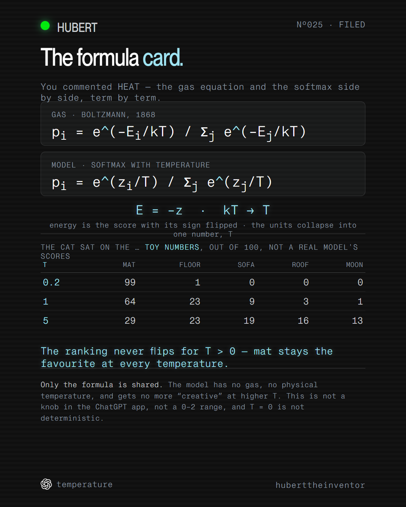

You commented HEAT — this is the formula card.
The temperature setting behind ChatGPT runs on gas physics from 1868.
Before a language model picks its next word, it divides every candidate's score by one number, T, and softmax turns the results into odds. Write energy as the score with its sign flipped — E = −z — and that division is exactly the rule Ludwig Boltzmann wrote for how a hot gas spreads its particles across energy levels, with the physics product kBT collapsed into the model's single unitless T. Cold (small T) piles the odds on the favourite word; hot (large T) spreads them toward even. Dividing by a positive number never changes which word was favourite to begin with.
Companion to the reel · Watch it on @huberttheinventor

Nº001 · The gas side
Boltzmann's rule divides each shelf's energy by kT
Picture five energy shelves holding a hundred particles. Each shelf's share of the
particles is proportional to e^(−Eᵢ/kT), where Eᵢ is that shelf's
energy and kT is the temperature in energy units — Boltzmann's constant, k, times the
absolute temperature, T, collapsed into one figure. Divide by a small kT and the gaps between
shelves stretch, so climbing costs a lot and almost everything settles on the lowest shelf. Divide
by a large kT and the gaps shrink, so climbing gets cheap and the shelves nearly even out.
“In statistical mechanics, the softargmax function is known as the Boltzmann distribution (or Gibbs distribution) … the index set 1, …, k are the microstates of the system; the inputs zᵢ are the energies of that state.”
Wikipedia, “Softmax function”
Nº002 · The model side
Relabel the shelves, and it's the same division
Before the model picks its next word, every candidate word has a score. Flip the
sign of that score and it plays the role of energy — E = −z — so the
highest-scoring word sits on the lowest, most likely shelf. The model has no degrees, so k times T
collapses into one unitless number: kBT → T. T = 1 means “use the scores as
they are.” Divide every score by T and softmax(zᵢ/T) turns the scores into
odds — the same division Boltzmann wrote for the gas, with the model's raw score standing in
for energy.
Nº003 · The toy numbers
Three temperatures, one prompt, and a ranking that never flips
For the prompt “The cat sat on the …”, give mat, floor, sofa, roof and moon the toy scores 4, 3, 2, 1 and 0 — illustrative numbers chosen only so the shelves are evenly spaced, not a real model's logits. Stepping T through 0.2, 1 and 5 redistributes the odds, out of 100:
| T | mat | floor | sofa | roof | moon |
|---|---|---|---|---|---|
| 0.2 | 99 | 1 | 0 | 0 | 0 |
| 1 | 64 | 23 | 9 | 3 | 1 |
| 5 | 29 | 23 | 19 | 16 | 13 |
mat stays the fullest shelf at every temperature in this toy example: dividing by a positive T never reorders the scores, so the ranking never flips for T > 0.
“It preserves the rank order of its input values.”
Wikipedia, “Softmax function”
Nº004 · Scope: what this is and is not
Only the formula is shared
Boltzmann's derivation needs a closed physical system in thermal equilibrium with a heat bath. A language model has none of that: nothing inside it is a gas, nothing gets hot, and it has no physical temperature. A running model does not get hotter when T goes up, and T is not GPU temperature. No specific kelvin value maps to any specific T, and a higher T does not make the model more “creative” — it only reshapes the odds over the same ranked list.
This page also does not claim: that the ChatGPT consumer app exposes a temperature slider (say “the setting behind ChatGPT” or “in the API”, not “ChatGPT's slider”); an API temperature range of 0 to 2 (the vendor's own docs returned 403 when this was checked); that T = 0 always gives the same answer (real serving can still vary); or that temperature is the only setting that shapes sampling — others, such as top-p, do too.
One system, taken apart.
Same treatment, different machine. No pitch, no thread-bait, and an unsubscribe link that works.
Take it with you
The one-pager is this page: both formulas, the mapping, the toy numbers and the scope, free, no email.
The List
One a week. And the other seven, now.
Confirm your address and the whole set arrives — all ten field guides, exactly as they are on the site, nothing held back for subscribers. After that, one new system taken apart every week. No pitch, no thread-bait, and an unsubscribe link that works.